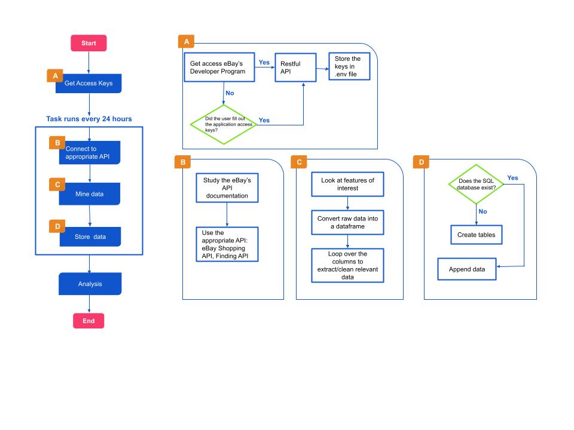
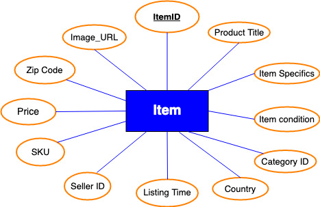
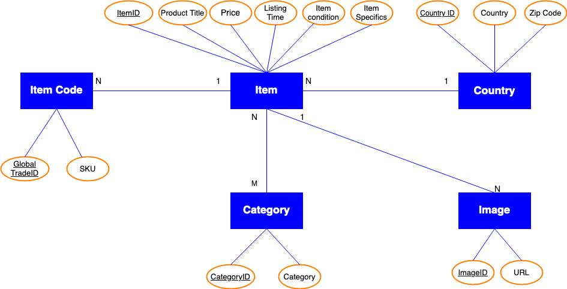

eBay’s API Data Pipeline
Contents
eBay’s API Data Pipeline¶
Table of Contents¶
Preliminaries ¶
What Is this Manual About? ¶
This manual aims to provide technical guidance and documentation to the process of building an automated data pipeline from eBay’s developer’s program for research purposes. Specific technical documentation will walk through the process of accessing eBay’s Application Programming Interface (API), and documenting the code that collects the data. This is a product of the capstone project, “Network Mobility of Illicit Cultural Property” developed by the UVA Data Science School and the Cultural Resilience Informatics and Analysis (CURIA) Lab.
This project stems from research of online marketplace as platforms for illicit trade. The scale of global art crime has been difficult to quantify due to the vast number of transactions and varying methods of trade. The illicit antiquities trade has moved away from physical specialist shops in favor of online buying and selling platforms such as eBay. These online platforms characterized by transactions and vendors offering heterogeneous goods have not been systematically studied due to its data-intensive nature.
This research project designs a robust data pipeline that collects, processes, and stores data to quantify and analyze the network mobility of illicit cultural property. The data pipeline consists of a template for accessing eBay’s API, understanding API documentation, and collecting necessary features for future analysis. The metadata for building and maintaining the data pipeline is recorded in an in-depth guide to account for data collection bias.
We will begin by explaining the basic technological concepts needed to build an API. This chapter will also include a dictionary of the eBay categories used to extract the necessary data from the listings in the antiques categories. The chapter includes a data modeling section that explains the SQL schema of building a relational database.
The second chapter is a user-friendly and comprehensive description of eBay’s API documentation, focused on the Shopping and the Finding APIs. A theoretical framework of picking these APIs, data description, and a section of legal and ethical challenges will also be included in this chapter.
Finally, the third chapter focuses on implementing the data pipeline architecture designed to collect data from eBay. This chapter includes a step-by-step guide on how to obtain this data from a recursive script, and also a tutorial to run these activities from the Rivanna UVA platform that facilitates the data storage systems. The result of this data pipeline framework is a replicable blueprint for interacting with an online marketplace’s API environment. This project will act as a precursor to begin research regarding the global trade of illicit cultural property through subsequent network and spatial analysis.
The updated version of this manual is 2022-02-27.
Description of eBay’s API Data Pipeline ¶
The first step of getting data from eBay’s developer’s program was to get API keys. The steps of collecting these keys are described in the Understanding API chapter while the implementation of a Flask app is in chapter 3.
The following flowchart provides a roadmap of the pipeline architecture. This general procedure ranges from collecting the access keys to running an automated script. This algorithm consists of three main activities in an automated fashion: connecting to the desired API (Shopping and Finding API), mining the data, and saving the information in a SQL database. More information about each step will be discussed in the following chapters.
Key Concepts ¶
This chapter aims to explain key concepts essential to the automated data collection process through eBay’s API.
1) Data Types:
Data types are an important aspect in programming that help determine the type of the object’s value. Some examples include numeric, alphanumeric, decimal values. Their differences lie in the types of operations the computer system can perform.
There are a variety of data types. Generally, data types can be classified into two categories: primitive/structure and composite. Primitive data types are native to the processor; they have a one-to-one correspondence with objects in the computer’s memory (a common data type of this class is an integer – whole number). Composite data types are constructed in the program out of primitive data types and other aggregate data types. A dictionary is an example of this category.
To avoid confusion, let us start by describing the main data types used in the eBay documentation and how these concepts might differ from ordinary use. For example, the use of float and decimal types in the world of programming and in eBay’s APIs may differ. Intuitively, we may think that a float is used as a decimal number in the calculator; however, an eBay decimal type contains different elements that are not necessarily numbers separated by decimal points. Therefore, as the meanings of data types can vary, we will explain them throughout this manual.
In the following table presents eBay’s schema types with examples :
Table 1. Primitive Data Types
Data Type |
Description |
Example |
|---|---|---|
String |
contains one or more characters, which can include numbers, letters, and other terms. The use of quotes ‘’ or double “” ensures that the element can be recognized as a string. |
|
Boolean |
represents binary-valued logic with values of true or false. These can be represented as 0 (for false) and 1(for true). |
|
Int |
An integer is a numeric value without a decimal point. Integers are whole numbers; they can be positive, negative, or zero. |
|
Float |
A number with a decimal point using 32 bit data (whole numbers may omit the decimal point). By using a float you can control where to locate the decimal point. |
|
Double |
A number with a decimal point using 64 bit data. Double float number may contain the digits 0-9, a hyphen to designate negative numbers, and a period (“.”) as the decimal separator. A common application is monetary values |
|
Decimal |
In contrast to float and double, which use rounding, decimal preserves all the digits. |
|
dateTime |
It stores a specific instant of time (start and end times). Its format is YYYY-MM-DD and it records Universal Coordinated Time (UTC). Alternatively, it can represent the official eBay time. |
|
Duration |
It contains a length of time and usually conveys the time left before a listing ends. Their format is as follows: P (period), nY (number of years). nM (number of months) nD (number of days), T (date/time separator), nH (number of hours), nM (number of minutes), nS (the number of seconds) |
|
anyURI |
It identifies web address or file location and specifies a Uniform Resource Identifier (URI). |
|
For explanatory purposes, the documentation of the different eBay APIs includes several composite data types. Here we will focus on the types most used in the shopping API.
Table 2. Composite Data Types:
Data Type |
Description |
Example |
|---|---|---|
Dictionary |
It is a collection of key values (unique identifier) that refer to objects. Each key is associated with only one item, so it can be used to find a particular set of data. Typically, keys are simple datatypes – usually alphanumeric strings. A dictionary data type can support operations, such as retrieving, inserting, or updating values. |
# empty dictionary |
token |
A token is an abbreviation in which white spaces are removed. |
|
AmountType |
It is a double type (64 bit) that specifies a monetary value – fees, prices, etc. - and currency. |
|
CountryCodeType |
It is a token data type that contains two-letter country codes. |
2) Application Programming Interface (API):
API is the acronym for Application Programming Interface. APIs serve as intermediaries through an online connection or set of programming codes, for example: a server receives a data query, parses responses, and sends instructions between a data provider and an end-user.
To make this term more familiar, imagine that you order some pizza to eat with your friends and watch the Super Bowl game. To process the order, the person in charge at the pizza joint must ask the kitchen to fix it and then hand it to delivery person to take it to you. That person is critical because he/she is the intermediary between you and the restaurant. He/she will make sure you can eat a delicious pizza, enjoy the game, and why not, watch your favorite team win the game. In this example, the “person in charge” is an intermediary and thus plays the role of an API.
To perform this intermediary role, APIs use standards, such as Hypertext Transfer Protocol (HTTP), and other Internet applications. APIs use different types of files to access information, such as XML and JSON format files. We will explain those file types in future sections.
3) Extensible Msrkup Languaje (XML):
XML stands for eXtensible Markup Language. We use it to store and transport data. XML facilitates communication between humans and machines. Due to its easy to read format is widely developed in APIs. This language uses a serialization process (translating a data type into a format that can be easily stored or transmitted over a computer network to be later reconstructed in a different environment). The versatility of this format is highly appealing in the API data collection.
4) JSON Format:
JSON is a text-based data format for storing and exchanging information. JSON data is used to send HTTP requests between applications. They are structured as a collection of key-value pairs, in which the key must be a type string followed by one of the following data types: numbers, boolean, array, etc. (See description of data types)
There are two valid types of JSON formats: a collection of key-value pairs enclosed by curly braces {}, or an ordered list of key-value pairs separated by commas and enclosed by a pair of square brackets []. See examples at this link:
5) Simple Linux Utility for Resource Management (Slurm) [1]:
Slurm Workload Manager is a free and open-resource job scheduler for Linux and Unix-Like kernels. Slurm allows users to prepare their computational workloads, or jobs, on allocated nodes to send them to a job controller. The controller oversees running on login nodes, scheduling, and monitoring the jobs in each period.
Slurm makes it easy for users to perform jobs in an automated manner in a time frame without the need to be present to review the process. For example, we scheduled a job to acquire seniority data for this capstone project starting at midnight. This facilitated the data collection, given the company’s policy of restricting daily calls to the Shopping API to 5,000 calls.
6) SQL database:
Structured Query Language -SQL- is used to manage relational databases. A relational data model[2] involves the use of data tables that collect groups of elements into relations. Each table contains columns and rows with a primary key identifying each row. Columns are attributes of labeled elements. Rows represent single items that belong to a type of entity. The organization of a relational database must provide derivability, redundancy, and consistency in the data. See figure 1 below
What Kinds of Data? ¶
A dictionary od eBay Categories ¶
The following dictionary summarizes the listed categories of the eBay Shopping API[3] and the Finding API [4] . Although most categories used here come from the Shopping API, some of those categories must be interpreted using the Finding API [5].
We have divided our dictionary into two parts: the first part presents the different features obtained from the application, and the second shows a visual display of how we organized the SQL schema.
The first section uses a tabular data, or spreadsheet, to help users identify the type of data, its description, and the source of the data they are looking for. Note that eBay documentation provides a broad classification of schema types [6]- string, dateTime, integer, among others.
As the following table shows, each feature corresponds to the type of data, its description, and source:
Table 3.
Feature |
Description |
Type |
API Source |
|---|---|---|---|
Item_ID |
ID that uniquely recognizes the item listing. eBay generates this ID when an item is listed. ID values are unique across all eBay listings. They are typically 9-12 digits in length. |
String |
Finding, Shopping |
Product_Title |
Item name as it appears in the listing title, or in the search and browse results. |
String |
Finding, Shopping |
CategoryID |
ID that uniquely identifies the category associated with the item listing. If the listing is nested in a sub-category, the CategoryID will be correlated to that sub-category’s ID. |
String |
Shopping |
Price |
A listing’s current price converted to US dollars. |
Integer |
Finding |
Item_Condition |
A list showing the name and unique ID of the item’s condition. |
String (List) |
Finding |
Listing_Time |
Time stamp eBay records when the listing is made available. This value is returned in GMT, the ISO 8601 date, and time format (YYYY-MM-DDTHH:MM:SS.SSSZ). |
dateTime |
Finding |
Item_Specifics |
Item specifics key-value pairs - if they exist - for a listing. This varies depending on the listing and listing category. |
Dictionary |
Shopping |
Seller_ID |
Encrypted ID that identifies unique sellers. Encoded with a hash code. |
String |
Shopping |
Country |
Two-letter ISO 3166 country code to indicate the country where the item is located (e.g., “US” for the United States or “GB” for the United Kingdom) |
String |
Finding |
Zip_Code |
The postal code where the item is listed. Field is returned only if a postal code has been specified by the seller and is anonymized when returned via the API. |
String |
Finding |
Image_url |
The URL of a specific listing on eBay. The returned URL is optimized to support search and to make items easier to find via internet search engines. |
String (URL) |
Finding |
SKU |
Unique SKU (Stock Keeping Unit), which is an identifier for items for sale . This identifier is for the object, not the listing. |
String |
Shopping |
The visual representation below is done by means of a conceptual Entity Relationship (ER) diagram [7]of the SQL database. This format allows us to observe how data is interrelated by primary keys, which are connected to different information columns.
The organization of a relational database must provide derivability, redundancy, and consistency in the data. To illustrate this, the visualization displays primary keys, such as product title (see figure 2), to avoid repetition of data groups and non-recurring lists. As an example, Figure 2 presents a primary item ID that has 5 columns with related data - product title, Price, listing time, item condition, item specific, item specific, etc.
Figure 2
Finally, the relational database can be updated as more data is collected, as long as the above criteria is met.